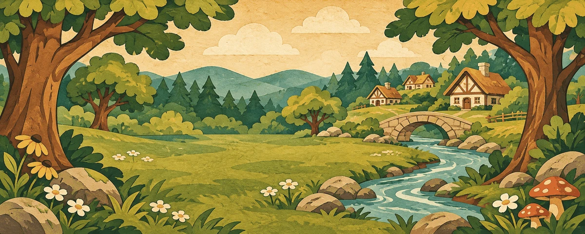
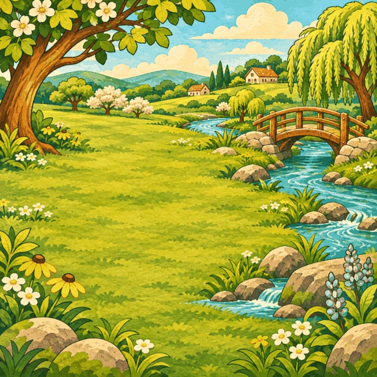
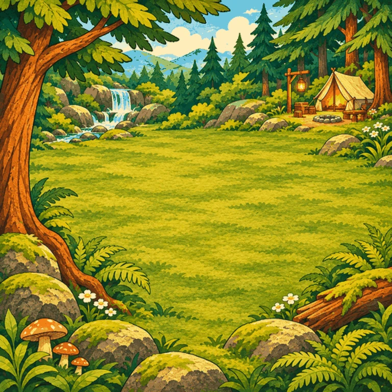
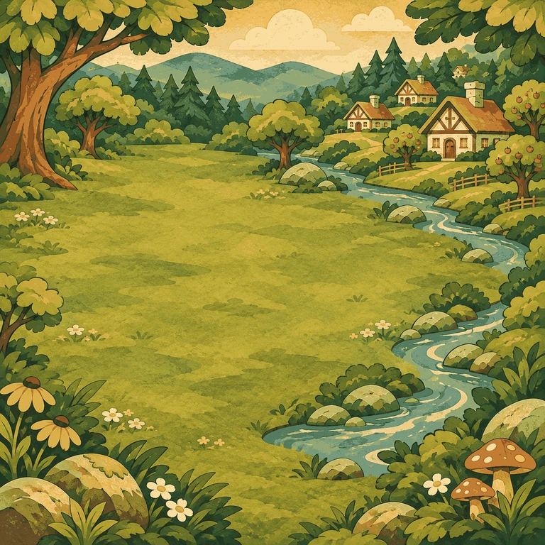

Travel choices
Choose routes through illustrated courses.
Development artwork · not gameplay screenshots.
A game by Spudacus
Find your path through a board adventure.
A tabletop-inspired adventure in development, with route choices, encounters and competing travelers.

Original board backgrounds. Interactive paths, pieces and gameplay controls are not shown.



Choose routes through illustrated courses.
Explore risk and reward as you travel.
Different computer-opponent strategies are being tested.
In development. Release availability is not announced. Features may change.
Return to GridMates